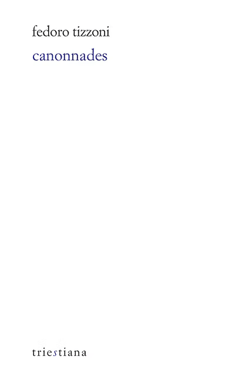

Le 10 janvier 1910, Marinetti dirige à Trieste la première soirée futuriste, dont le projet est aussi de susciter une certaine « réclame » dans les terres irrédentes. Teodoro Finzi (1887-1923), journaliste et dramaturge, y assiste. La même année, sous le pseudonyme et anagramme de Fedoro Tizzoni, paraissent Canonnades, son unique recueil poétique : culte de la vitesse et d’une machine pleine d’attraits, éloge d’une animalité primordiale et vigoureuse, expression de la colère, étreinte cyclopéenne de la victoire sportive et autres divertissants tableaux satiriques… Mais est-ce bien de futurisme qu’il s’agit ? Ou, déjà, d’une parodie de futurisme ?
Date de parution : octobre 2024
Traduit de l'italien par Laurent Feneyrou et Pietro Milli
Préface d'Elvio Guagnini
128 pages
Prix : 15€